代码修改和本地自测已完成，等待审核，尚未合并或部署。105 项相关测试及两种前端构建通过。下面先展示实际构建截图；浏览器使用隔离 API 快照，摄像头和 LED 等待部署后的实机验收。
Kiosk 与 Galaxy 均使用 [上一页] [可输入页码]/总页数 [跳转] [下一页]。实体棋盘入口已接入现有摆谱流程。
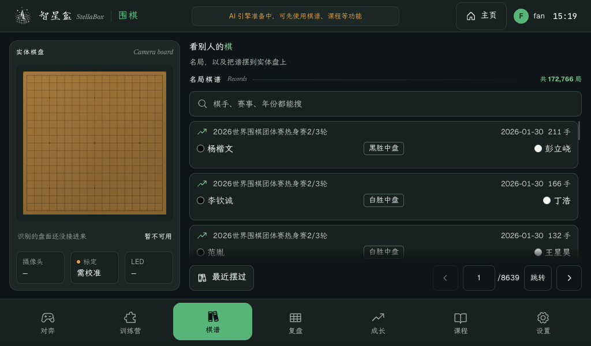
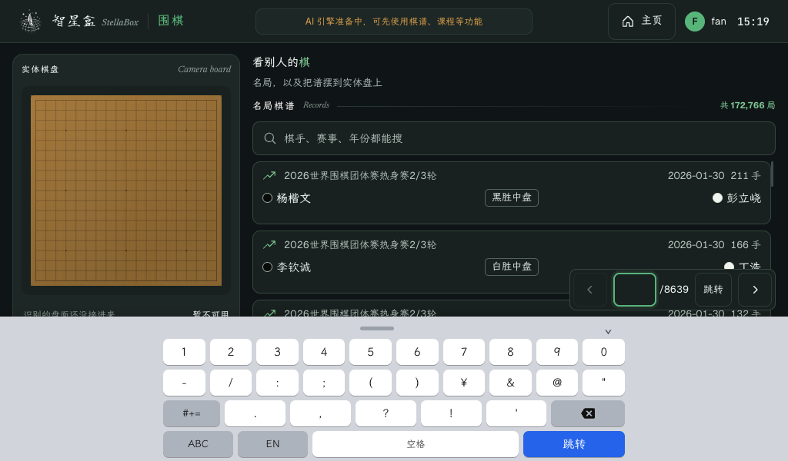
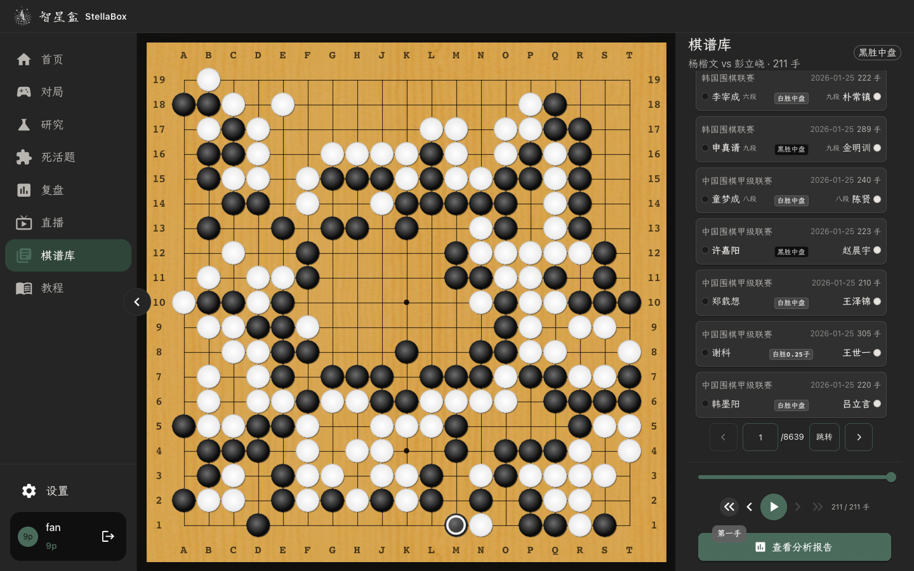
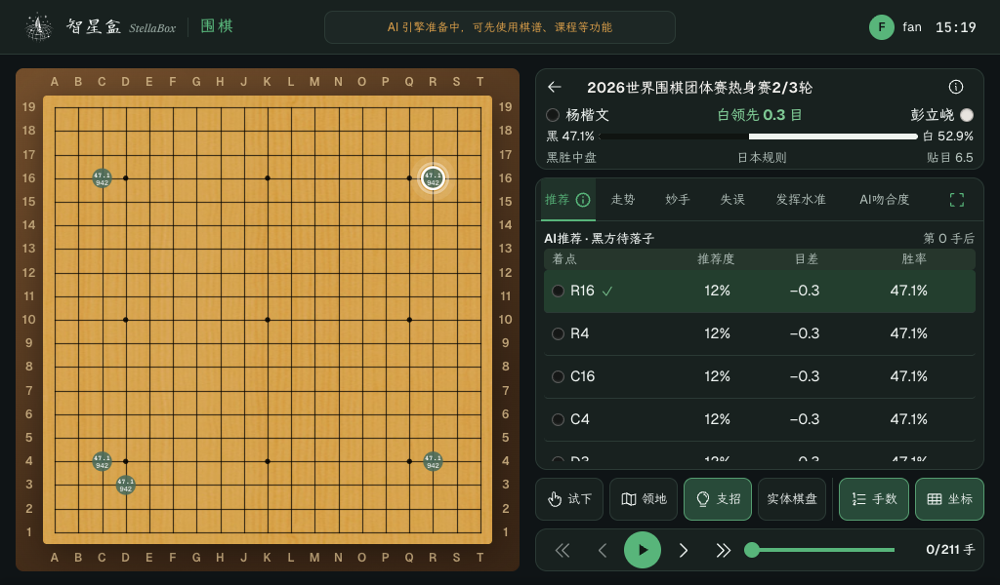
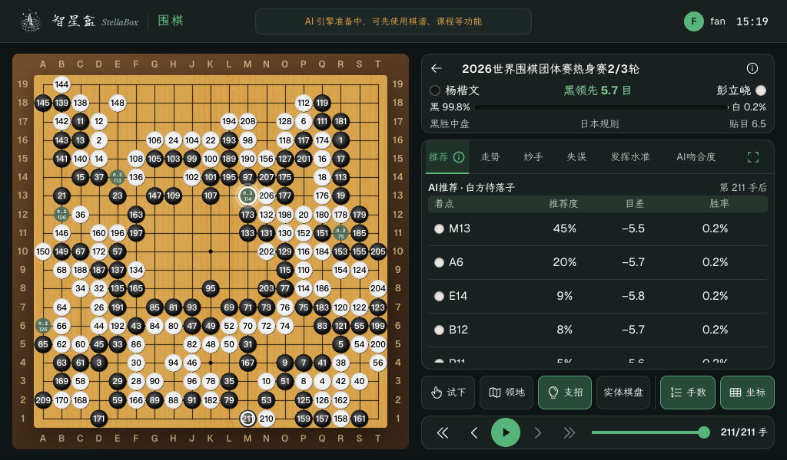
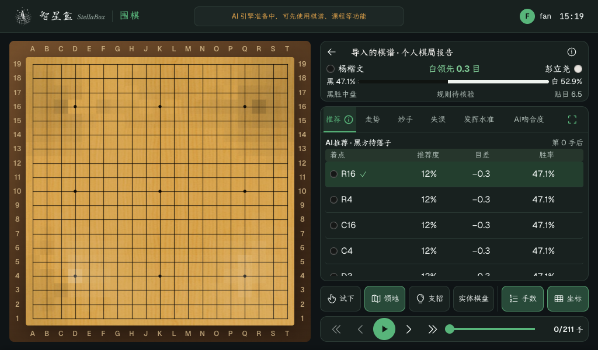
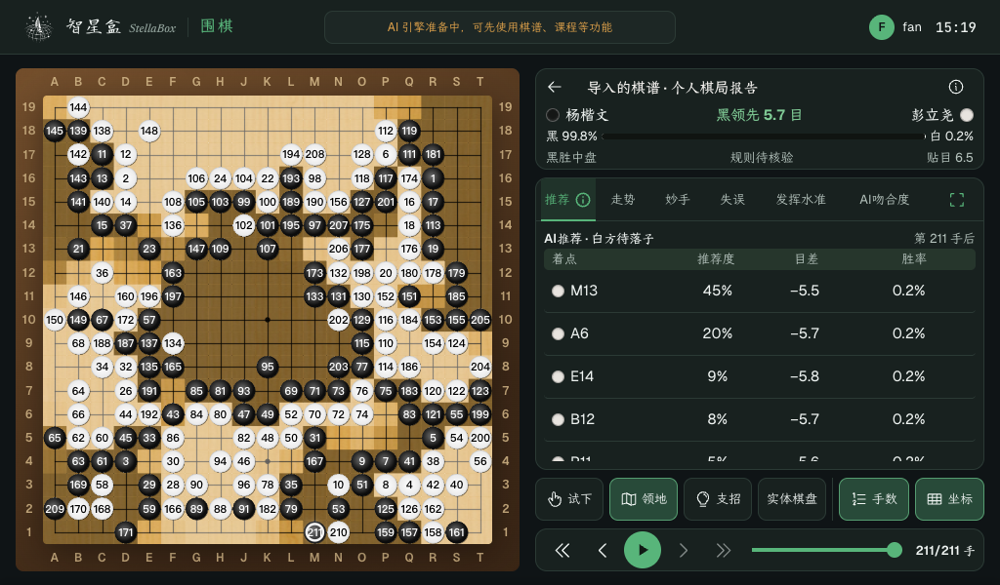
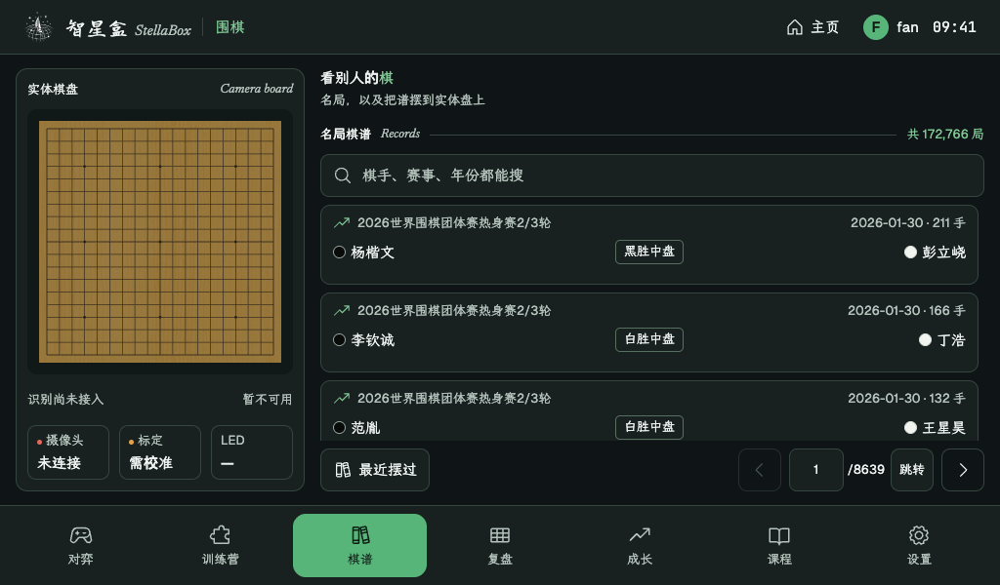
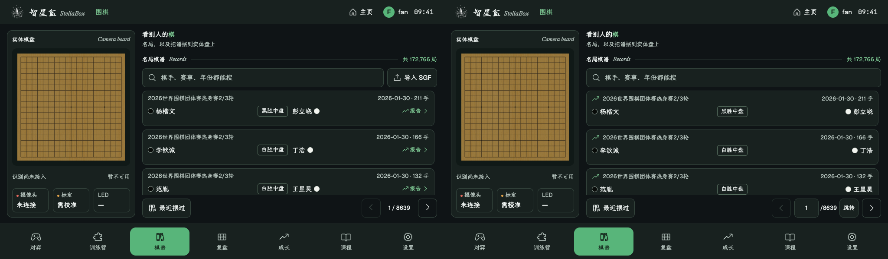
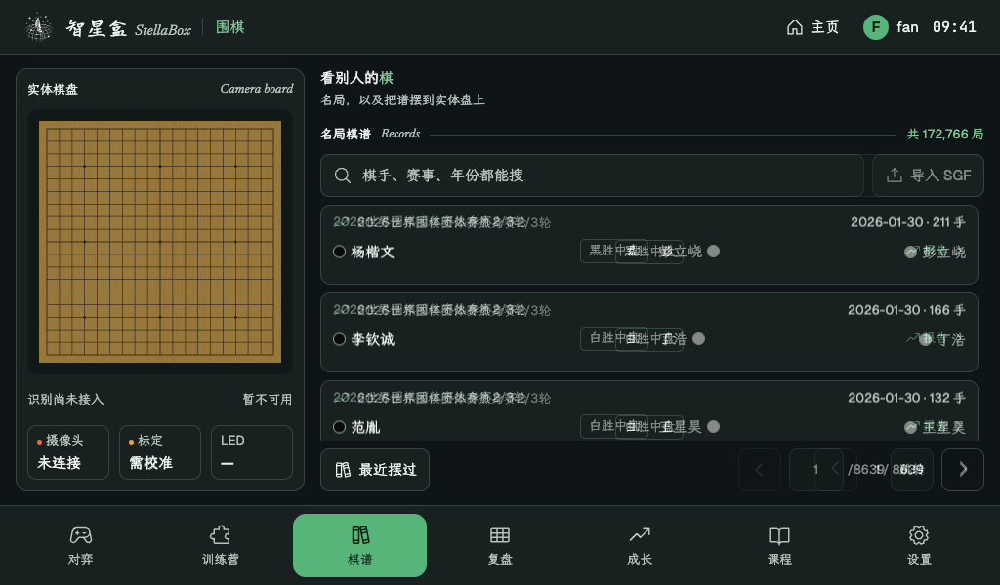
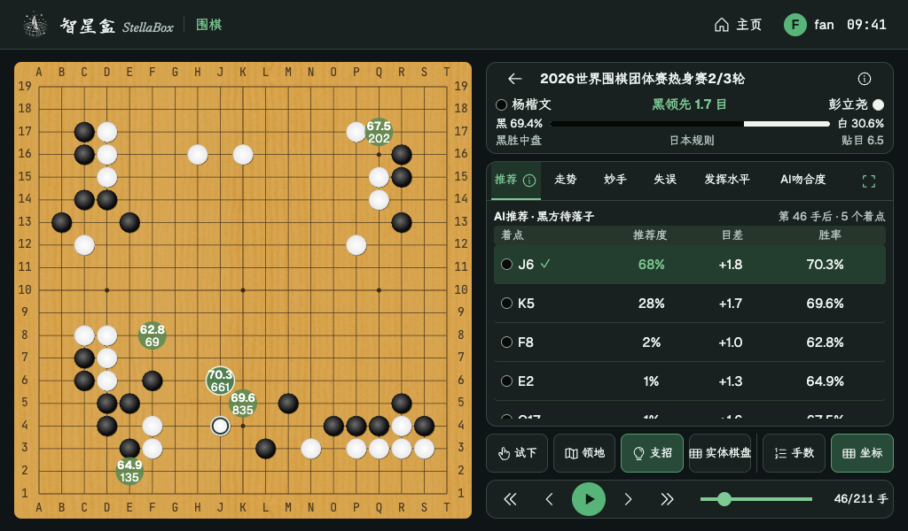
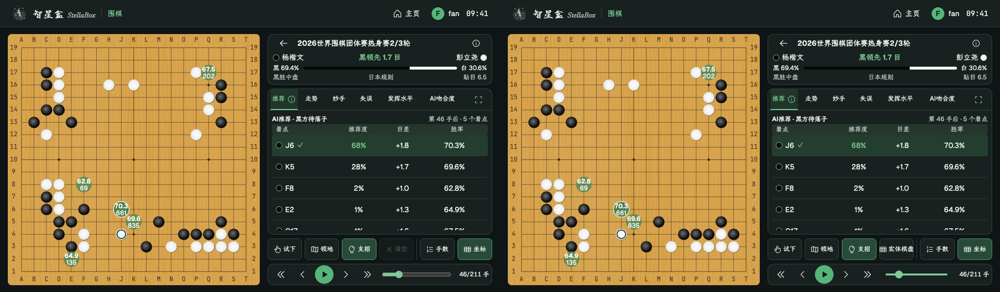
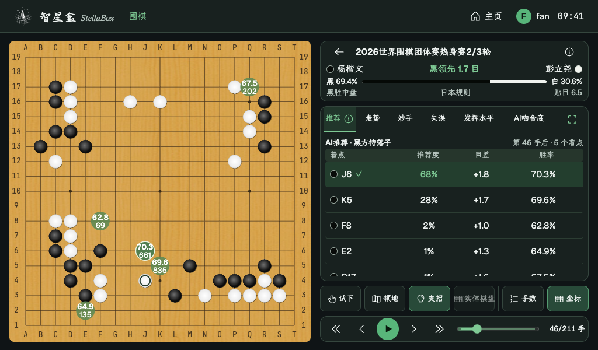
Kiosk 与 Galaxy 都采用 [上一页] [可输入页码]/总页数 [跳转] [下一页]，不再展示编号分页。此图来自当前真实前端的只读快照预览。
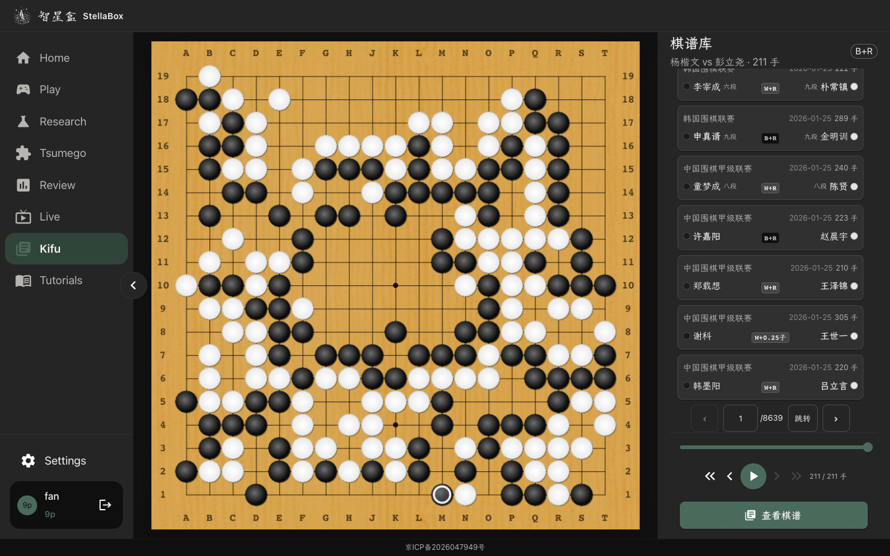
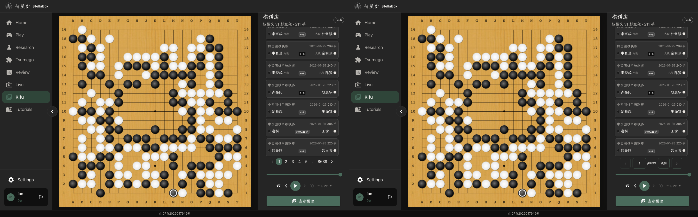